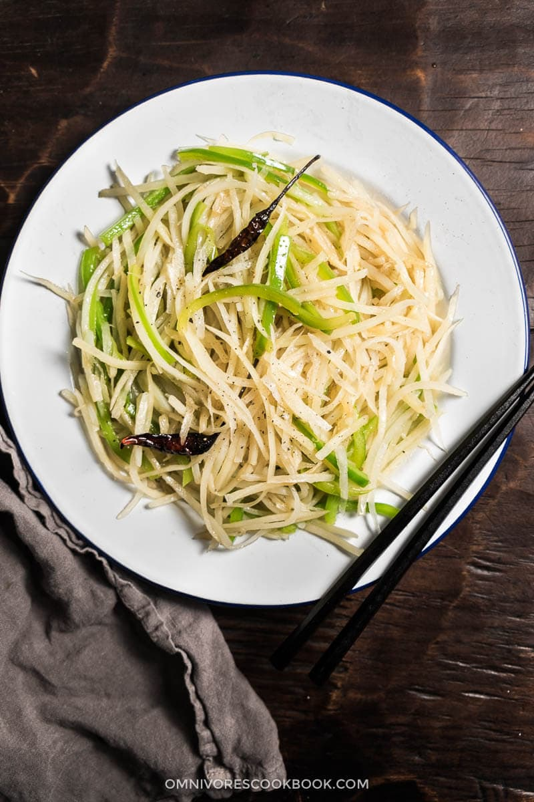

Shredded Potato Stir Fry

Description
Shredded potato stir fry is one of the most popular Chinese home dishes. This dish
has a different texture to the normal french fries and has a spicy and tangy taste to it.
Ingredients
- 1 pound russet potato
- 1 large green bell pepper
- 1/4 cup of vegetable oil
- 4 dried red chiles
- 4 teaspoons of rice vinegar
- 1 teaspoon of kosher salt
Steps
- Fill a medium sized bowl with cold water and start peeling the potatoes.
- Shred them with a mandoline or just cut them. You want them to be long thin matchsticks.
- Submerge them in water for about 30 minutes to rinse off excess starch.
- Cut the bell pepper in half lengthwise and discard the stems and seeds and cut them into the same long thin matchsticks.
- Pat the potatoes dry and add 2 teaspoons of oil in the pan.
- Add 2 of the chiles and stir them until they start to blacken.
- Add the potatoes and bell peppers and stir fry them vigorously.
- Sprinkle with salt as you stir fry. Once the stir fry is done, turn off the heat and add vinegar.
- Stir to mix well before serving the dish.